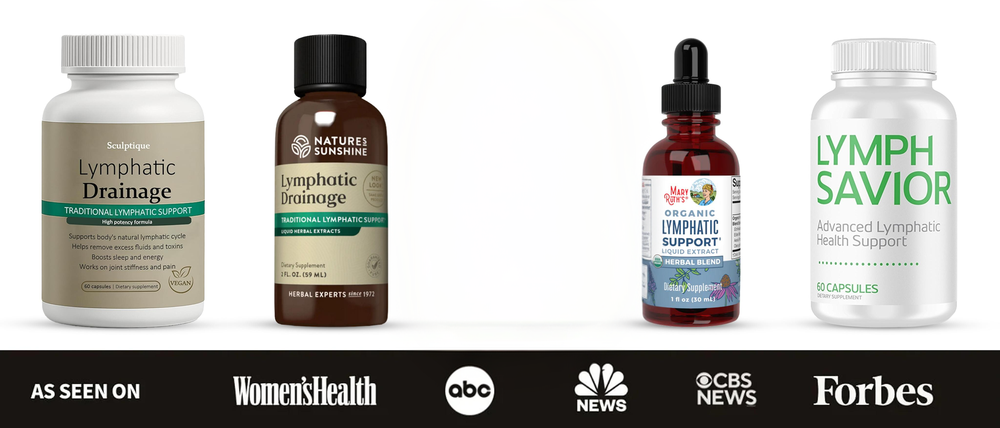
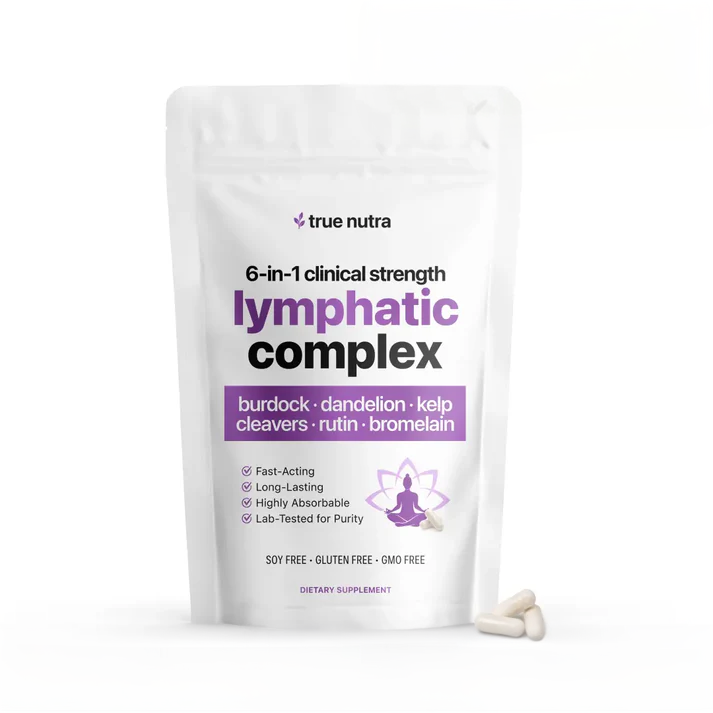
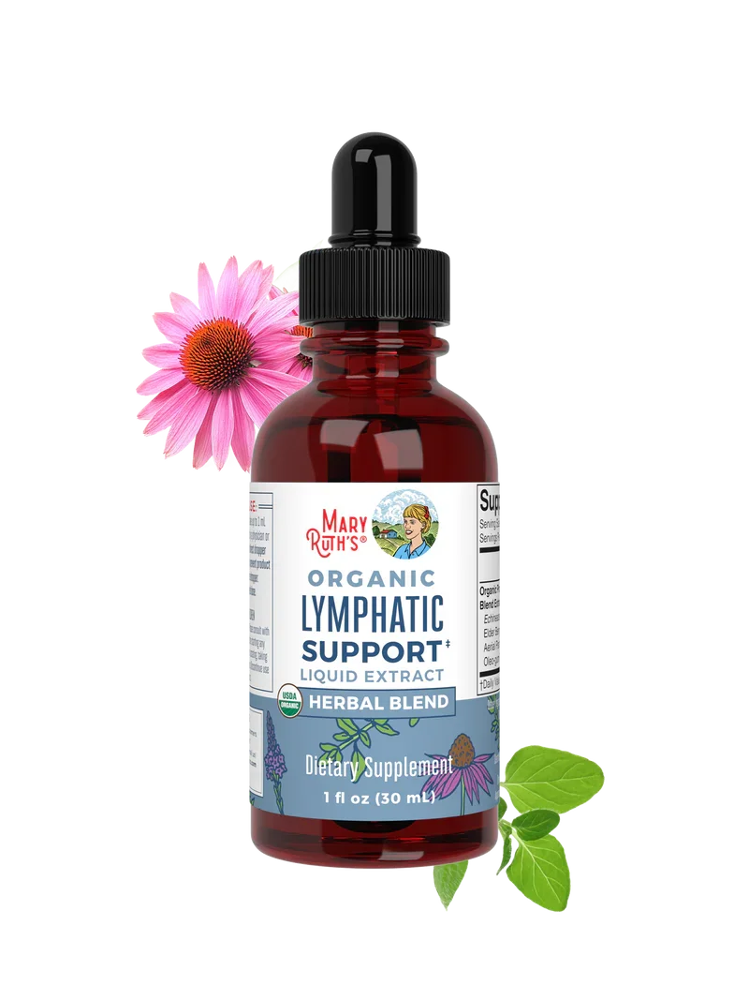
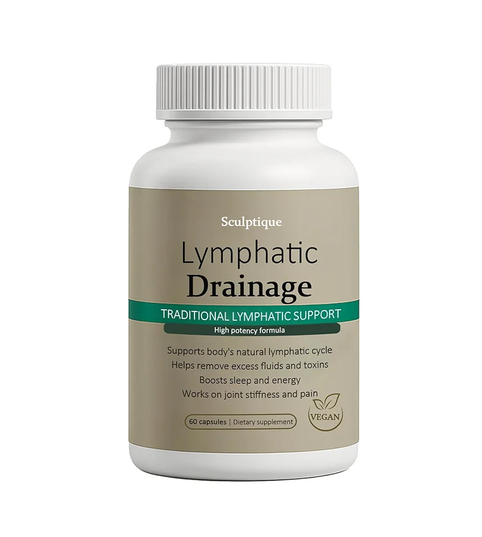
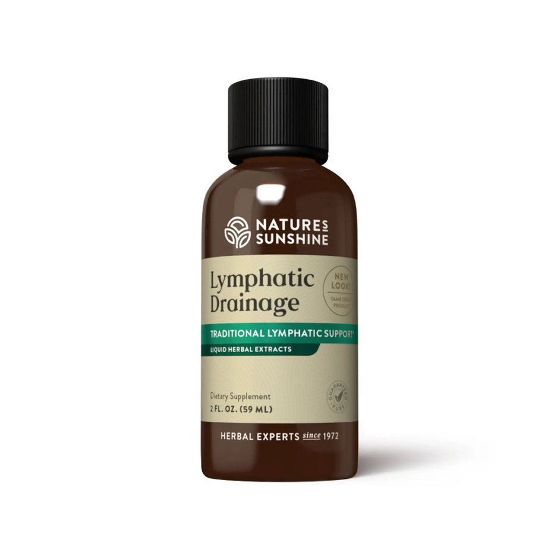
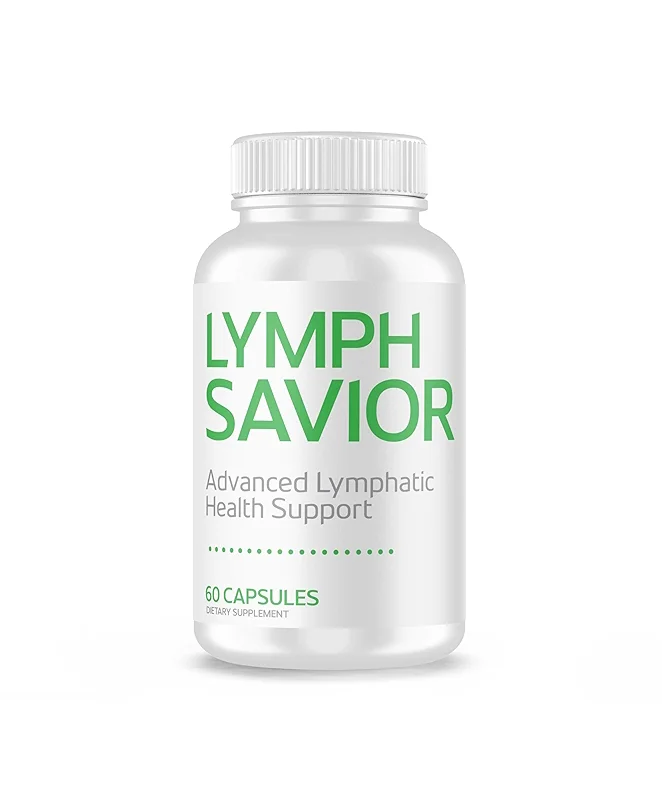
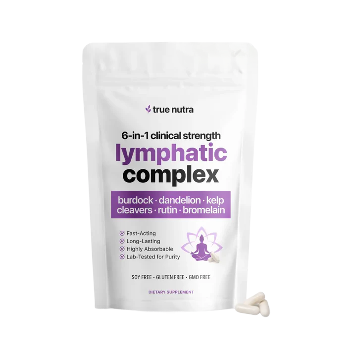

The Top 5 Lymphatic Drainage Supplements - And The One That Outperformed Every Other Formula We Tested
Lymphatic drainage supplements are everywhere right now, but most of them don't actually do what they claim. We compared formulas, delivery methods, dosing, and real-world results so you don't waste money on the wrong one.


Over the past year, lymphatic drainage supplements have become the go-to fix for puffiness, swelling, water retention, cellulite, and that heavy, sluggish feeling so many people deal with day after day.
Your lymphatic system is what clears waste, excess fluid, and inflammation out of your body, and when it slows down (which happens to most adults over 30) things get backed up fast. That's when you start seeing puffy ankles, a swollen face in the morning, stubborn cellulite, water weight that won't move, joint stiffness, and a stomach that always feels bloated and heavy.
The right herbal formula can move that trapped fluid, calm the swelling, and leave you feeling lighter, leaner, and more comfortable in your own skin again.
But with so many lymphatic products out there - drops, tinctures, capsules, powders - which ones actually work? That's exactly what we set out to find out.
Our team reviewed dozens of lymphatic drainage supplements and narrowed the list down to the five most popular options people are buying right now, then put them all to the test.
Here's what we found.
How We Ranked These Supplements
We scored each product on six key things:
-
Ingredient Quality
Are the ingredients backed by real research, and do they actually work together to move trapped fluid and calm swelling? -
Effectiveness for Bloating & Water Retention
Does it noticeably reduce that puffy, swollen, heavy feeling? -
Support for Joint Stiffness & Circulation
Does it ease the discomfort in your legs, ankles, and joints? -
How Well It Absorbs
Does the formula actually get into your body and go to work, or does most of it pass through without doing anything? -
Transparency & Quality
Is the label honest about what's inside, and is it made to high manufacturing standards? - Real User Results: Are users actually seeing changes in puffiness, bloating, cellulite, and how they feel?
Our Top 5 Lymphatic Drainage Supplements
#1 - True Nutra 6-in-1 Lymphatic Complex
(Best Overall for Lymphatic Drainage, Puffiness & Water Retention)
Overall Grade A+


From the very first week of testing, True Nutra's 6-in-1 Lymphatic Complex stood out for one simple reason: it works fast, and it works on every problem people are actually trying to fix - bloating, puffy face in the morning, swollen ankles at the end of the day, water weight, stiff joints, cellulite, and that heavy, sluggish feeling that drags you down all day.
Users reported feeling noticeably lighter within days, with visibly less swelling in the face, hands, and feet within two to three weeks, and smoother, firmer-looking skin within a month. What sets it apart is that it's the only formula on this list that combines all six of the most powerful lymphatic ingredients (including Rutin and Bromelain, the two that actually break down the puffiness and get fluid moving again) at full strength, in a simple two-capsule daily routine that's easier and more effective than any of the messy drops on the market.
Special Offer: True Nutra Is Offering Buy 1 Get 1 FREE + Free Shipping for Our Readers (Limited Supply)
Visit the SiteWhy It's #1
Feel lighter and less bloated within days - users notice the difference in the first week
Visibly less puffiness in the face, hands, and ankles within 2-3 weeks
Smoother, firmer-looking skin and less cellulite within a month
Two easy capsules a day - no bitter drops, no leaky bottles, no mess
90-Day Money-Back Guarantee - three times the industry standard, completely risk-free
PROS
- Releases trapped water weight and puffiness fast
- Flatter stomach, less bloated feeling
- Visibly less swelling in face, ankles, and hands
- Smoother skin, less visible cellulite
- Simple two-capsule daily routine
- 90-day money-back guarantee
CONS
- Only available through the official website
- Frequently sells out due to high demand
Our Experience: Testers felt lighter and less bloated within the first week, with the puffiness in their face and ankles visibly going down by week two, and smoother skin with less visible cellulite by week four. Multiple testers said this was the first thing that actually worked after years of trying everything else.
Bottom Line: If you want to feel lighter, look less puffy, and finally get rid of that bloated, heavy feeling, you should definitely try out True Nutra's Lymphatic Complex.
We Reached Out to True Nutra & Locked In Buy 1 Get 1 FREE + Free Shipping For Our Readers (Likely to Sell Out Fast)
Visit the Site#2 — Mary Ruth's
Overall Grade B+


Mary Ruth's Lymphatic Drops use Echinacea root and elderberry, which are both fine for general immune support but don't actually target the real problems people care about: bloating, puffy face, swollen ankles, water weight, and cellulite.
The formula is missing the two ingredients that actually move trapped fluid and calm the swelling (Rutin and Bromelain), and because it's a drops format you're stuck with the usual hassle of a bitter taste, a messy dropper, leaking bottles, and a watered-down strength that most users give up on within a week.
PROS
- Well-known brand with organic ingredients
- General immune and wellness support
- Recognizable name
CONS
- Missing the key ingredients that actually reduce puffiness and bloating
- Drops taste bitter and the bottle is messy to use
- Watered-down formula - lower strength than capsules can deliver
- Doesn't disclose exactly how much of each ingredient you're getting
- Slower, less visible results than the #1 pick
Verdict: Mary Ruth's is fine for general immune support, but the ingredients in it don't actually do what people need them to do, which is get rid of the bloating, puffiness, and swelling. The drops format also waters it down further, leaving it nowhere close to True Nutra on the issues that actually matter.
#3 - Sculptique
Overall Grade B

Sculptique is a drop formula that focuses more on skin and circulation than actually draining lymph. It does include Dandelion and Cleavers, which give it a little help with fluid retention, but the doses are low and it's missing Bromelain, the natural enzyme that breaks down the swelling and puffiness in your tissues.
The label doesn't tell you how much of each ingredient you're getting either, and because the whole formula leans toward skin support instead of drainage, the results on the puffy face, the swollen ankles, the water weight, and the cellulite are slow and underwhelming.
PROS
- Some support for skin health
- Contains a couple of helpful lymphatic herbs
CONS
- Missing Bromelain - the main ingredient that breaks down swelling
- Low doses across the formula
- Drops format means watered-down strength
- More focused on skin than actual drainage
- Slow, underwhelming results on puffiness and bloating
Verdict: Sculptique might support your skin a little, but it doesn't really tackle the real problem of bloating, puffy face, and swollen ankles. Without Bromelain and with low doses across the board, it's slower and weaker than True Nutra.
#4 - Nature's Sunshine Lymphatic Drainage
Overall Grade C+

Nature's Sunshine Lymphatic Drainage uses some traditional herbs like Stillingia Root and Prickly Ash Bark, which are the kind of old-school ingredients you'll see in folk medicine books but not in modern research on actually moving lymph. It does include Cleavers, which can give a little help with fluid, but the formula is missing Rutin and Bromelain, the two ingredients that actually make a visible difference. It's also a drops formula, which means the same problems as the others: bitter taste, messy dropper, leaky bottle, and a watered-down strength that can't match what a capsule can deliver.
PROS
- Contains Cleavers for mild lymph support
- Established natural products brand
CONS
- Missing Rutin and Bromelain - the two ingredients that drive real results
- Uses traditional herbs without much modern research behind them
- Drops format means bitter taste, leaky bottle, watered-down strength
- Pricier than average for a weaker formula
Verdict: Nature's Sunshine leans on old-school herbs that don't deliver visible results on the things people actually care about, and the drops format makes it worse. Slower and weaker than True Nutra on every front.
#5 - Lymph Savior
Overall Grade C-


Lymph Savior contains some ingredients that can actually cause problems for sensitive users, like Horse Chestnut (which can trigger nausea and dizziness) and Yerba Mate (which can leave you jittery, anxious, or unable to sleep). The formula does include a couple of helpful herbs like Burdock and Cleavers, but the label doesn't tell you how much of each you're getting, so there's no way to know if it's a real dose or just a sprinkle. The bigger problem is what's missing: Rutin and Bromelain, the two ingredients that actually deliver visible results on puffiness and swelling.
PROS
- Includes a couple of mild lymph-support herbs
- Some antioxidant content
CONS
- Missing Rutin and Bromelain - the ingredients that actually get results
- Doesn't tell you the doses of what's inside
- Horse Chestnut can cause nausea or dizziness
- Yerba Mate can cause jitters and trouble sleeping
- Slow to do anything for bloating, puffiness, or swollen ankles
Verdict: Lymph Savior is missing the ingredients that drive real results, hides the doses of what's in it, and has a few ingredients that can actually cause side effects. Far less effective (and riskier) than the higher-ranked options.
Why True Nutra Took the #1 Spot
True Nutra checks every box people actually care about:
-
The Right Ingredients
Six powerful, research-backed ingredients (more than anything else on the market) and the only formula that combines Rutin and Bromelain. That's the one-two punch your body needs to actually move trapped fluid, calm the swelling, and flatten the bloating. -
The Right Format
Two simple capsules a day, with no bitter drops, no messy dropper, and no leaking bottles. Just swallow with your morning coffee and you're done. And because capsules hold the full strength of every ingredient, you get what the label promises instead of a watered-down liquid version. -
The Right Standards
The label tells you exactly what's inside, every ingredient at full strength, no hidden blends, and third-party tested for purity. -
The Right Results
Users feel lighter and less bloated within the first week, with less puffiness in the face and ankles by week two, and smoother skin with visibly less cellulite by week four. Faster, more visible results than anything else we tested.
The Lymphatic Supplement Buying Guide (So You Don't Get Burned)
Things to Look For
A Real, Complete Formula
Look for
ingredients backed by actual research. The gold standard
combination is Rutin, Bromelain, Dandelion, Cleavers, Burdock,
and Kelp - that's what actually moves trapped fluid and tackles
puffiness, swelling, and water weight.
Honest Labels
You want to see exactly how
much of each ingredient is in the bottle. If the label hides
the amounts behind a "proprietary blend," they're probably
hiding the fact that they used a sprinkle instead of a real
dose.
Capsules Over Drops
Drops sound easy, but
the truth is they taste bitter, the bottles leak, and the
liquid waters down the strength of the ingredients. Capsules
deliver the full strength and they're easier to take
consistently. Two capsules, swallow, done.
A Real Money-Back Guarantee
Most brands
offer 30 days, which isn't enough time to see what a product
can do. True Nutra gives you 90 full days to try it risk-free.
Red Flags
Hidden Doses
If the label doesn't tell
you how much of each ingredient is inside, assume the amounts
are too small to do anything.
Missing Rutin and Bromelain
These are the
two ingredients that actually drive visible results, and any
formula without them is missing the most important part.
Drops Format
Bitter taste, messy dropper,
leaky bottles, watered-down strength. Easier to skip, harder to
absorb.
Side-Effect Ingredients
Watch out for
Horse Chestnut (can cause nausea or dizziness) and Yerba Mate
(can cause jitters or sleep problems).
Are Lymphatic Drainage Supplements Really the Best Solution?
There's no such thing as a magic pill, but a well-formulated lymphatic supplement can make a real, visible difference in how light and comfortable you feel in your own body.
Our research showed True Nutra's 6-in-1 Lymphatic Complex came out on top. Most users feel lighter and less bloated within the first week, see visibly less puffiness and swollen ankles in 1-3 weeks, and notice smoother skin and less cellulite by week four to six. Take it daily, and the results stick.
Special Offer for Our Readers
After our evaluation, we reached out to True Nutra and they agreed to extend an exclusive deal for NutriHealth Forum readers:
- Buy 1 Get 1 FREE on the 6-in-1 Lymphatic Complex
- FREE Shipping on your order
- Full 90-day, no-questions-asked money-back guarantee
At this price, with a full 90 days to try it risk-free, it's the perfect time to finally feel lighter, less bloated, and more comfortable in your own skin.
Visit the Site
Our Top Pick - True Nutra 6-in-1 Lymphatic Complex
- The most ingredients of any lymphatic supplement on the market, at full strength
- The only formula with both Rutin and Bromelain - the two ingredients that actually get rid of puffiness, swelling, and bloating
- Easy two-capsule daily routine - no bitter drops, no messy droppers, no leaky bottles
- Thousands of users report less bloating, less puffiness, slimmer ankles, smoother skin, and less cellulite within weeks
- 4.8/5 star rating
- 90-day money-back guarantee